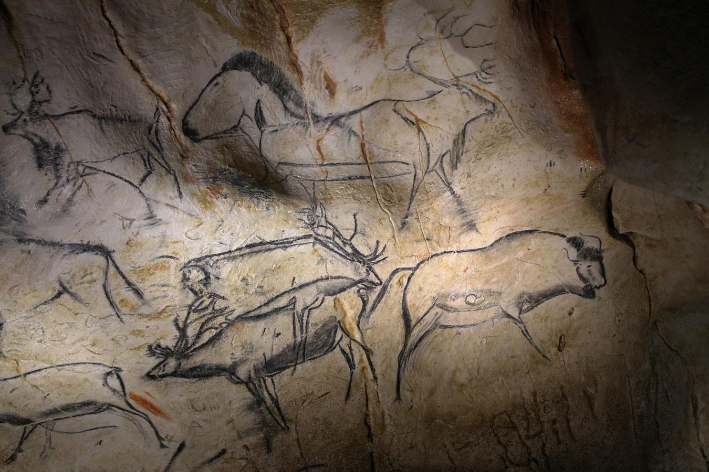

Про що нам каже історія?
Перші мисливці-збирачі жили в Африці. Однак близько 100 000 років тому деякі мисливці-збирачі покинули Африку і переїхали в інші частини світу. У печері Шовет (шоу-вай) на півдні Франції мисливці-збирачі намалювали на стінах печери складні витвори мистецтва.
Подивіться на зображення печерної картини, зробленої мисливцями-збирачі в печері Шовет. Потім дотримуйтесь інструкцій нижче.

| Інформація з картини | Висновок |
|---|---|
| Живопис показує зображення тварин, що мисливці-збирачі вполювали. | |
| Цю картину створили мисливці-збирачі в печері на півдні Франції. | |
| Ця картина - прекрасний витвір мистецтва, який був написаний з великою майстерністю. У ньому показані сцени з повсякденного життя мисливців-збирачів. |